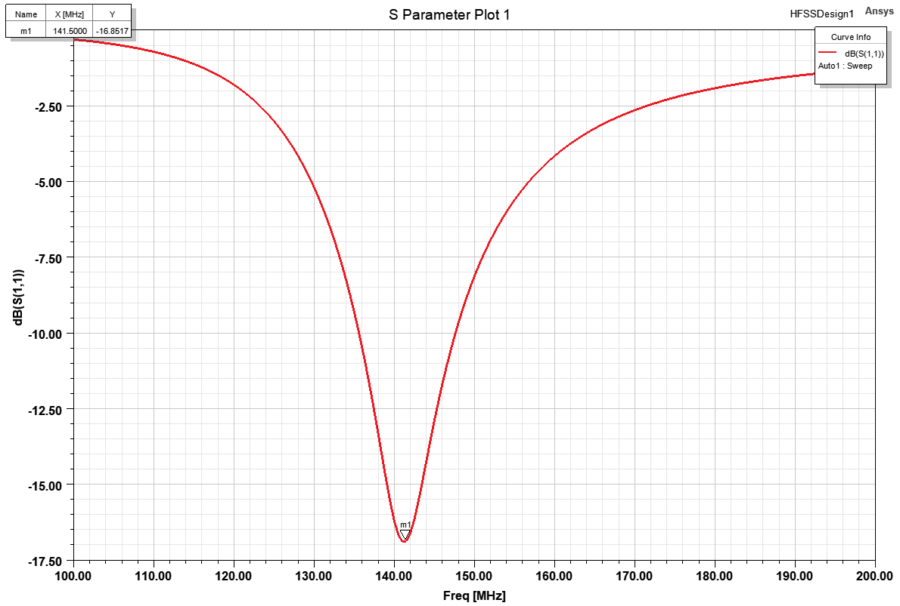

Customized Antennas for Space Applications
Data Reception
I designed and simulated antennas in ANSYS HFSS to receive signals from NOAA weather satellites passing over my location. These antennas were fabricated at low cost and connected to an SDR (Software Defined Radio) for signal acquisition. The received signals were decoded into real-time satellite images using specialized software, followed by noise filtering and signal correction to enhance clarity and accurately extract weather data.
V-Dipole Antenna (137 MHz)
The V-dipole antenna was designed for NOAA satellite signals at 137 MHz, optimized for circular polarization and wide beam coverage. Simulated in ANSYS HFSS, it achieved proper impedance matching and gain suitable for low-elevation satellite passes. The antenna was built using aluminum elements with a coaxial feed and successfully received real-time weather imagery when used with an SDR receiver.
